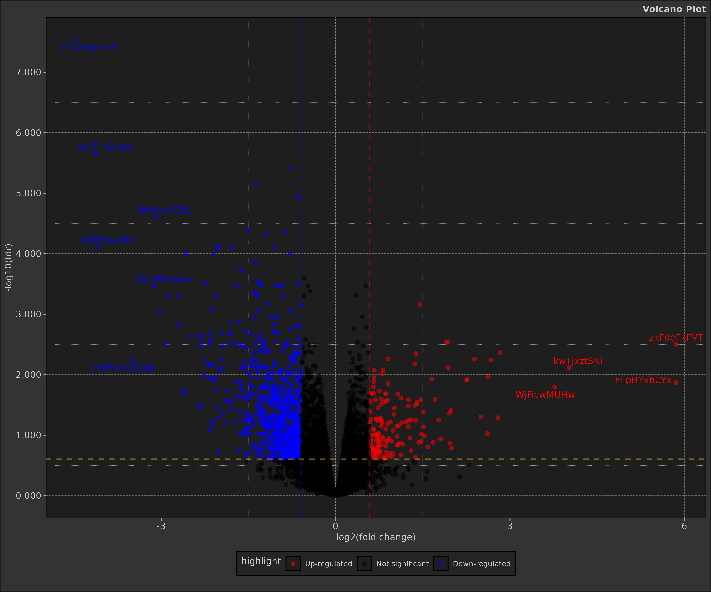
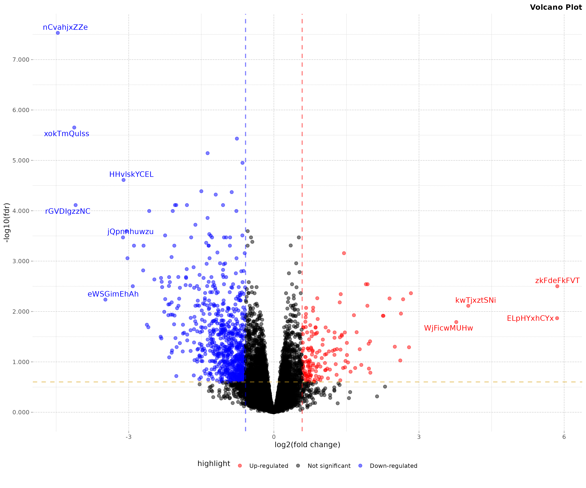

Review differential expression analysis (DEA) and volcano plots
Source:vignettes/bio_review-differential-expression-analysis-volcano-plots.Rmd
bio_review-differential-expression-analysis-volcano-plots.RmdIntroduction and context
Differential expression analysis (DEA) is a fundamental technique in bioinformatics, particularly in the field of transcriptomics. This review will cover the key concepts, statistical methods, and visualisation techniques used in differential expression analysis, with a focus on RNA sequencing (RNA-seq) data.
Volcano plots with dmplot
Simply put a volcano plot is a scatter plot that combines statistical significance (y-axis) with the magnitude of change (x-axis) in a feature (gene, transcript, etc.) between two conditions. The plot is named after its characteristic shape, with significant features forming peaks that resemble a volcano.
This is typically used in differential expression analysis in bioinformatics but has other applications as well.
dmplot makes creating a volcano plot easy with its
Volcano R6 class. You can do it in 3 simple steps:
box::use(dt = data.table)
box::use(dmplot[ Volcano ])
# 1. load data
data(diff_expr_res, package = "dmplot")
head(diff_expr_res)
#> feature log2FC p_value fdr
#> <char> <num> <num> <num>
#> 1: nCvahjxZZe -4.4653827 1.84e-12 2.95e-08
#> 2: xokTmQulss -4.1254298 2.77e-10 2.23e-06
#> 3: EsqEEnrrMA -0.7639582 6.92e-10 3.70e-06
#> 4: MesqnUNFSM -1.3692713 1.79e-09 7.20e-06
#> 5: vHRmtdhRnW -0.6481394 3.48e-09 1.12e-05
#> 6: HHvlskYCEL -3.1067641 9.15e-09 2.45e-05
# 2. create the Volcano object
volc <- Volcano$new(data = diff_expr_res)
# 3. create the plot
volcano_plot <- volc$plot_volcano()
print(volcano_plot)
Continue reading for a review of differential expression analysis and volcano plots.
Overview of Differential Expression Analysis
Differential expression analysis aims to identify genes or transcripts that show significant differences in expression levels between two or more biological conditions. This technique is crucial for understanding:
- Gene regulation mechanisms
- Cellular responses to stimuli or treatments
- Differences between cell types or disease states
In order to execute DEA we must:
- Design an experimenta
- Collect and process RNA-seq data
- Perform statistical analysis
RNA-seq Data
Before statistical analysis, raw RNA-seq data undergoes several processing steps:
- Quality control
- Read alignment or pseudoalignment
- Quantification of gene/transcript expression
The output is typically a count matrix, where rows represent genes/transcripts and columns represent samples.
Statistics
Normalisation
Raw count data needs to be normalised to account for differences in sequencing depth and other technical biases. Common methods include:
- TPM (Transcripts Per Million) - not for differential expression analysis1
- RPKM/FPKM (Reads/Fragments Per Kilobase Million) - no longer recommended2
- DESeq2’s median of ratios method - “gene count comparisons between samples and for DE analysis; NOT for within sample comparisons”3
- EdgeR’s TMM (Trimmed Mean of M-values) method
Modelling Gene Expression
Gene expression is often modelled using a negative binomial distribution:
\[ Y_{ij} \sim NB(\mu_{ij}, \alpha_i) \]
Where:
- \(Y_{ij}\) is the count for gene i in sample j
- \(\mu_{ij}\) is the mean
- \(\alpha_i\) is the dispersion parameter
The mean \(\mu_{ij}\) is related to the experimental conditions through a log-linear model:
\[ \log(\mu_{ij}) = x_j'\beta_i \]
Where \(x_j\) is a vector of covariates and \(\beta_i\) is a vector of regression coefficients.
Hypothesis Testing - the Statistical Analysis
For each gene, we test the null hypothesis that there is no difference in expression between conditions. This typically involves:
- Estimating model parameters
- Calculating a test statistic (e.g., Wald test, likelihood ratio test)
- Computing a p-value
Simply put what this means is that we go over every row of the matrix and execute a statistical test to determine if the gene is differentially expressed between the two conditions.
We end up with a result table that contains the gene name, the p-value, and the log fold change. It will look a little like the following:
head(diff_expr_res[, -"fdr"])
#> feature log2FC p_value
#> <char> <num> <num>
#> 1: nCvahjxZZe -4.4653827 1.84e-12
#> 2: xokTmQulss -4.1254298 2.77e-10
#> 3: EsqEEnrrMA -0.7639582 6.92e-10
#> 4: MesqnUNFSM -1.3692713 1.79e-09
#> 5: vHRmtdhRnW -0.6481394 3.48e-09
#> 6: HHvlskYCEL -3.1067641 9.15e-09False Discovery Rate (FDR)
FDR (false discovery rate) is a tool used to eliminate bad results which could look good. This is used for determining the statistical significance of the potentially differentially expressed genes. This is done by adjusting the p-values with the FDR method.
In the example of a volcano plot p-values are sometimes used on this y-axis for determining if a gene is statistically significant or not. A p-value cut-off of 0.05 is often used, meaning that 95% of the time you will get results from samples that overlap in their distributions - sometimes we get samples that do not overlap. A gene could have a p-value less than 0.05 yet have it be a false positive.
FDR is a tool used in the Benjamini-Hochberg method. This method is more stringent and helps to eliminate these false positive discoveries.
When assessing p-values what we want to look for is something called an anti-conservative distribution in p-values. P-values for genes that are not statistically significant should be spread evenly between 0 and 1, when there is an experimental condition that may skew expression levels there tends to be a large number p-values accumulating at under 0.05 (5%).
Typically one would look at these distributions by eye to determine an anti-conservative distribution and a cut-off. Benjamini-Hochberg have formalised this procedure into a formula; this allows us to adjust p-values to eliminate false positives that may have been otherwise reported as significant.
Thus after adjusting the p-values of our data we have a new column on our data:
head(diff_expr_res)
#> feature log2FC p_value fdr
#> <char> <num> <num> <num>
#> 1: nCvahjxZZe -4.4653827 1.84e-12 2.95e-08
#> 2: xokTmQulss -4.1254298 2.77e-10 2.23e-06
#> 3: EsqEEnrrMA -0.7639582 6.92e-10 3.70e-06
#> 4: MesqnUNFSM -1.3692713 1.79e-09 7.20e-06
#> 5: vHRmtdhRnW -0.6481394 3.48e-09 1.12e-05
#> 6: HHvlskYCEL -3.1067641 9.15e-09 2.45e-05Log Fold Change
log2FC stands for log fold change - mathematically this
represents: log2(fold change). A fold change is calculated
as a change in expression relative to a control. If a gene is expressed
5X (5X FC) as much in the test sample as the control the FC is 5, and
its log2FC is about 2.32.
Typically a an absolute change of 1.5 log2FC relative to
the control as a cut-off is used to determine if a gene is
differentially expressed or not.
So a log2FC of 1.5 would actually represent a
2^{1.5} = 2.82 FC increase relative to the control. A
cut-off of 1.5 is commonly used in these kind of analysis - and can be
adjusted as per results/research in question.
Why use log2FC vs FC? The raw FC values when calculated
vary from 0 to positive infinity. They are centred around 1. Meaning
that a FC of 1 means the gene in the test individual was equal in level
of expression to the control. Downward regulation or expression in a
negative direction relative to the control are squeezed between 0 and 1,
while the positive/upregulation fold changes can vary from 1 to
infinity.
Using a log2FC allows us to recentre the values around 0
and express them symmetrically for both positive and negative FCs.
The log2 fold change for a gene i between two conditions is calculated as:
\[ \log_2FC_i = \log_2\left(\frac{\text{Expression in condition 2}_i}{\text{Expression in condition 1}_i}\right) \]
Notice on a volcano plot the x-axis is centred around 0. This is because the log fold change is symmetrical around 0. A log fold change of 0 means no difference in expression between the two conditions.
Visualisation with Volcano Plots
Volcano plots are a popular way to visualise the results of differential expression analysis. They combine statistical significance with the magnitude of change.
box::use(dmplot[ theme_dereck_light ])
# since dmplot always returns a ggplot object we can make adjustments
volcano_plot2 <- volcano_plot +
theme_dereck_light()
print(volcano_plot2)
Interpreting the Volcano Plot
In the resulting plot:
- X-axis: log2 fold change
- Y-axis: -log10(FDR)
- Red points: Significantly up-regulated genes (FDR < 0.05 and log2FC > 1)
- Blue points: Significantly down-regulated genes (FDR < 0.05 and log2FC < -1)
- Black points: Non-significant changes
- Labelled points: Top 15 most significant genes
The plot allows quick identification of genes with both large fold changes and high statistical significance.
Biological Interpretation
While statistical analysis identifies differentially expressed genes, biological interpretation is crucial. This may involve:
- Gene Ontology (GO) enrichment analysis
- Pathway analysis
- Network analysis
- Integration with other omics data
Conclusion
Differential expression analysis is a powerful tool in bioinformatics, allowing researchers to identify genes that respond to experimental conditions or differ between biological states. By combining rigorous statistical methods with intuitive visualisation techniques like volcano plots, it provides valuable insights into gene regulation and cellular function.
dmplot’s Volcano R6 class presented here
offers a standardised and quick way way to create volcano plots,
facilitating the exploration and presentation of differential expression
results. However, it’s important to remember that these plots are just
one step in the broader process of understanding biological systems
through transcriptomic data.
Further Reading and Related Analyses
While differential expression analysis provides valuable insights into individual gene behaviour, researchers often seek to understand broader patterns and biological contexts. Here are some related analyses you might find interesting:
- Gene Set Enrichment Analysis (GSEA): Identifies gene sets that are significantly enriched in different conditions or phenotypes.
- Weighted Gene Co-expression Network Analysis (WGCNA): Identifies modules of highly correlated genes and relates them to external sample traits.
- Time-course Expression Analysis: Examines how gene expression changes over time, useful for developmental studies or response to treatments.
- Single-cell RNA-seq Analysis: Extends differential expression analysis to the single-cell level, revealing cell-type-specific responses and heterogeneity within populations.
- Functional Annotation Clustering: Groups similar annotations together to reduce redundancy and highlight biological themes.
These advanced analyses can provide deeper biological insights and complement the results of standard differential expression analysis. They often require specialised tools and careful interpretation but can greatly enhance our understanding of complex biological systems.